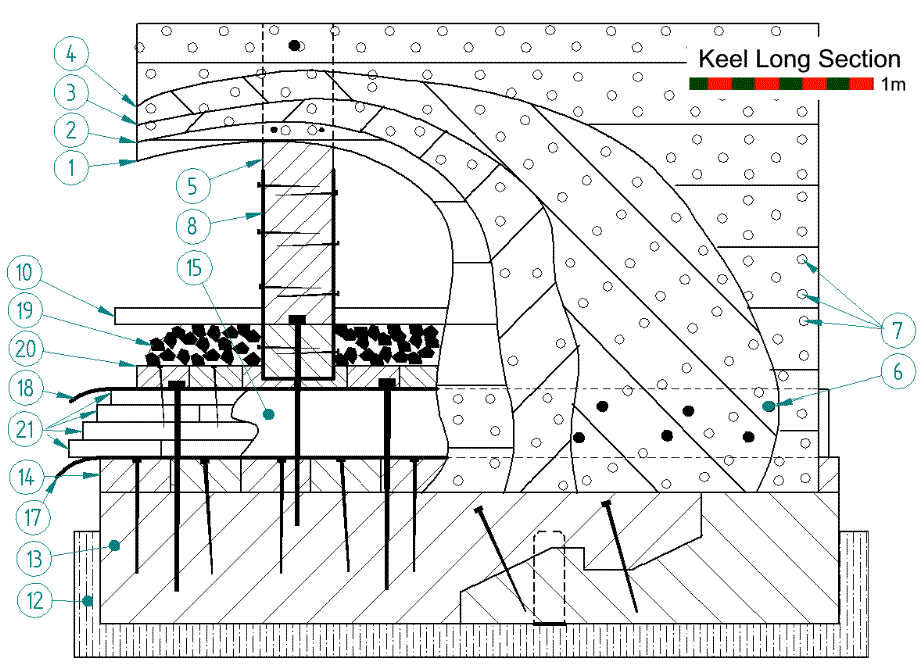
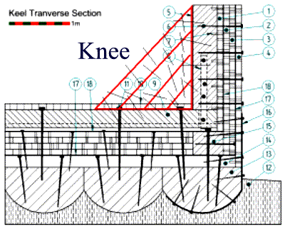
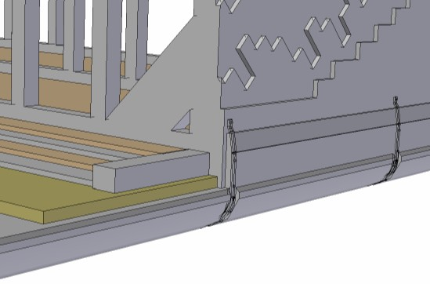
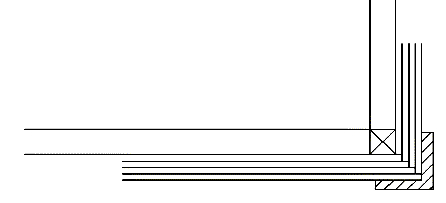

COPYRIGHT Tim Lovett © June 2004
..
Looking in the area where a steel ship would normally have a bilge radius, let's investigate how to tie the cross laminated wall and keel (floor) together.
|
Design Notes: The Bilge (non) Radius For a first structural detailing effort, let's assume there is no radius at all. Steel ships use a bilge radius here (See diagram /ark/stability/static_roll_stability.htm ) Steel can be easily formed and the radius helps to reduce secondary stress problems (water pressure pushing the wall inwards). But a small radius is not much fun in timber, requiring intricate shaping of frames and planks. Also, the timber needs to be rather thick to handle primary stresses, so it should comfortably handle secondary stresses due to it's inherent area moment (deep section). In other words, in order to make the timber handle tension like steel, it is far better in bending than the equivalent steel plating. |
Concept sketch for Keel to Wall Connection. Image Tim Lovett June 2004
|
Explanation Construction begins with a platform floor - large logs resting on piers, followed by a layer of transverse planking. A significant 'Tie-in beam' (probably better called a stringer, or maybe 'bilge stringer' - Ref 2) allows Lam 2 and 3 to be attached without nailing too close to the planks ends. This 'beam' could also be built up from laminations - the advantage being the ease of nailing into the initial transverse layer from above (especially while there is a big longitudinal half-beam directly underneath). The floor is built up in layers until the decking is level with the bilge stringer. Not sure how seriously we need to treat shear stresses here, since there may be enough torsional rigidity without diagonal layers here. Longitudinal members should dominate the keel cross-section to counter hogging and sagging loads. The bulkheads are then erected. Metal straps might be used to secure the bulkhead to the keel, probably not necessary since Lam 2 and 3 do this job anyway. The ballast is loosely packed rocks. The ark is lightweight despite having a near full larder in the water, it would be nice to use gravity to feed water and grain from high up in the vessel. The low ballast gives the freedom to do this. The secondary job of the ballast area could be a drainage system for onboard water. A rocking vessel doesn't drain to one end and free water will slosh around, but water in a rock filled cavity should find its way to the lowest point quietly. Then a pump on each end of the vessel could drain the excess away (animal powered pump for example). As for issues with foul water - its only 4 to 5 months until they are back on dry ground. Potentially a pump at one end could work if the bulkhead frames had a hole with a one way flap to let the water through. The planking is then attached over the bulkhead timbers to form the lowest deck. |
How does the keel handle tension?
When the hull is sagging, the keel goes into tension. Since we can't get a log 150m long the planks must be joined. The animation below illustrates the transfer of tensile forces using multiple layers held together by dowels. Timber is good in tension and good in PERPENDICULAR shear, a rare loading failure. In fact this type of failure is so uncommon in timber structures that it is not normally measured.
"A very limited amount of data suggests that the shear strength perpendicular to the grain may be 2.5 - 3 times that of shear parallel to the grain". (Ref 3). For ordinary timbers like pine or spruce, this translates to a respectable 20 or so, far more for a heavy hardwood like Live Oak (3x18Mpa = 54Mpa). So this structure is quite efficient, provided there are enough dowels relative to the length of overlap between adjacent planks. (A lot more than the three dowels shown in the simplified graphic below)
Image Tim Lovett June 2004
In a longitudinal section view, the bulkhead junction might look something like the next image. Note the large number of timber dowels (7), and the selected use of metal spikes (6) on wall lamination (3), pinning to beam (15).

Image Tim Lovett June 2004
| Item |
Description |
Dimensions | Material | Comments |
| 1 |
Wall parallel layer 1 |
(75-20) x (300-400) x (long) |
G wood |
Dowel to frame. Occasional spike |
| 2 |
Wall diagonal down layer 2 |
(75-20) x (300-400) x (long) |
G wood |
Some dowel to layer 1 |
| 3 |
Wall diagonal up layer 3 |
(75-20) x (300-400) x (long) |
G wood |
Many dowels thru 3 layers. Spikes |
| 4 |
Wall parallel layer 4 |
(75-20) x (300-400) x (long) |
G wood |
Dowels and some spikes |
| 5 |
Transverse Frame (Bulkhead) |
400 x 400 x H |
Frame wood |
High density timber that holds nails well |
| 6 |
Metal Spike medium |
Diam 30 x 700 |
Bronze |
Could be clinched thru frame |
| 7 |
Timber dowel |
Diam 40 x (200 - 400) |
Dense Wood |
Maximum strength for hammering |
| 8 |
Strap - Bulkhead |
100 x 20 x 2500 |
Bronze |
See Metal Straps |
| 9 |
Floor (Bulkhead framing) |
400 x 400 x W |
Frame wood |
High density timber that holds nails well |
| 10 |
Decking |
150 x 300 x (long) |
Easy wood |
Quick and easy working timber |
| 11 |
Metal Spike large |
Diam 60 x 1400 |
Bronze |
All spikes are pre-drilled... |
| 12 |
Aggregate footing |
17000 x 30000 x 2000 |
Gravel/Crushed rock |
Possibly sand |
| 13 |
Log - False Keel |
Diam 1500 x (long) |
Big parallel bole |
Massive, so split and hewn in situ |
| 14 |
Transverse Layer - Lower |
200 x 400 x W |
G wood |
Firmly attached. Will get wet |
| 15 |
Bilge Stringer |
400 x 500 x (long) |
Frame wood |
High density timber that holds nails well |
| 16 |
Strap - False Keel |
100 x 20 x 2500 |
Bronze |
Fitted prior to setting log in place |
| 17 |
Membrane - outer |
- |
Pitch impreg mat |
Chinese Junks |
| 18 |
Membrane - inner |
- |
Pitch impreg mat |
Chinese Junks |
| 19 |
Ballast drain |
250-350 deep |
Gravel / rock |
Could also use dressed stone blocks |
| 20 |
Transverse Layer - Upper |
100 x 250 x W |
G wood |
Protects inner membrane |
| 21 |
Keel layers - longitudinal |
(75-20) x (300-400) x (long) |
G wood |
Heavily dowelled for tensile transfer |

James King. I prefer a rounded bilge because of the ability to transfer load from the sides to the bottom. I recognize the construction challenge, but I can find lots of wooden ships and barges with rounded bilges, but none with square bilges. That having been said, the square bilge would probably have an advantage in roll damping. It could probably be built. If the square bilge is used, then I would recommend the addition of knees between the transverse frame and floor (see attachment) to transfer load between the side and bottom. This would be at every frame, except where there is a bulkhead. The knee could be tied together with spikes or metal straps and spikes.
Corner straps
The bilge corner detail utilizes bronze straps which are fixed at the 'bulkhead' frames by large bronze spikes (as shown in the above section view). The keel log on the corner might be chosen slightly k\larger then the others, and the straps mounting area gouged to ensure the straps cannot get snagged. The keel log also extends beyond the wall and additional planks are mounted on this shoulder to protect the outside layer of planking in the event of bumps and scrapes. This plank could also have a recess for the strap.

Image Tim Lovett July 6, 2004

Renton's image 25 June 2004
1. Timber ship glossaries http://www.wisconsinshipwrecks.org/tools_glossary.cfm , http://www.bruzelius.info/Nautica/Etymology/English/Murray(1765).html
2. Comprehensive nautical glossary http://titanic-model.com/glossary/s.shtml
3. Wood: Strength and Stiffness. p2. http://www.fpl.fs.fed.us/documnts/pdf2001/green01d.pdf